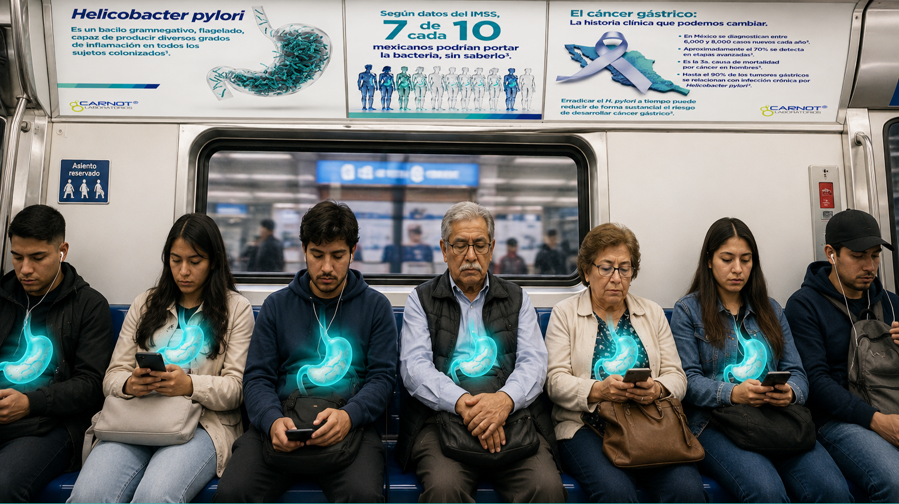

Campaña educativa avalada por la Asociación Mexicana de Gastroenterología.
Esta información no sustituye la consulta médica.
La Asociación Mexicana de Gastroenterología es la principal sociedad científica en salud digestiva en México. Sigue sus redes: @amg.org.mx · @gastromx · Facebook
Temas educativos y cifras verificadas de instituciones mexicanas e investigaciones clínicas publicadas en revistas arbitradas internacionales.

La bacteria silenciosa más prevalente del país. La mayoría nunca lo sabrá sin una prueba específica.
Cuando los síntomas se vuelven evidentes, las opciones de tratamiento son significativamente limitadas.
Es la 3ª causa de mortalidad por cáncer en hombres mexicanos. Una cifra prevenible.
La OMS la clasifica como carcinógeno de Grupo I — el nivel más alto de evidencia sobre causa de cáncer.
La detección y erradicación temprana es la intervención preventiva con mayor evidencia disponible. Ver estudio →
Los nuevos protocolos superan significativamente los esquemas convencionales, incluso en cepas resistentes. Ver estudio →
Pregunta a tu médico por el tratamiento que está mejorando significativamente su tasa de curación.
Esta información no sustituye la consulta médica.
estómagos mexicanos
portan la bacteria H. pylori
— y la mayoría no lo sabe.
Se presenta con síntomas como gastritis, acidez y reflujo — señales que millones de personas normalizan. Detectarla a tiempo marca la diferencia.
Responde 6 preguntas rápidas sobre tus síntomas. Recibirás una evaluación de tu nivel de riesgo y orientación sobre cuándo consultar a tu médico.
Esta evaluación es orientativa y no constituye diagnóstico médico. Criterios basados en ACG Clinical Guideline 2017 y el V Consenso Mexicano AMG 2025.
Artículos, consejos de especialistas y actualizaciones del mundo de la gastroenterología, directamente en tu correo. Sin spam.
Sin spam. Puedes cancelar cuando quieras. Contenido avalado por AMG.
Pregunta a tu médico por el tratamiento que está mejorando significativamente su tasa de curación.